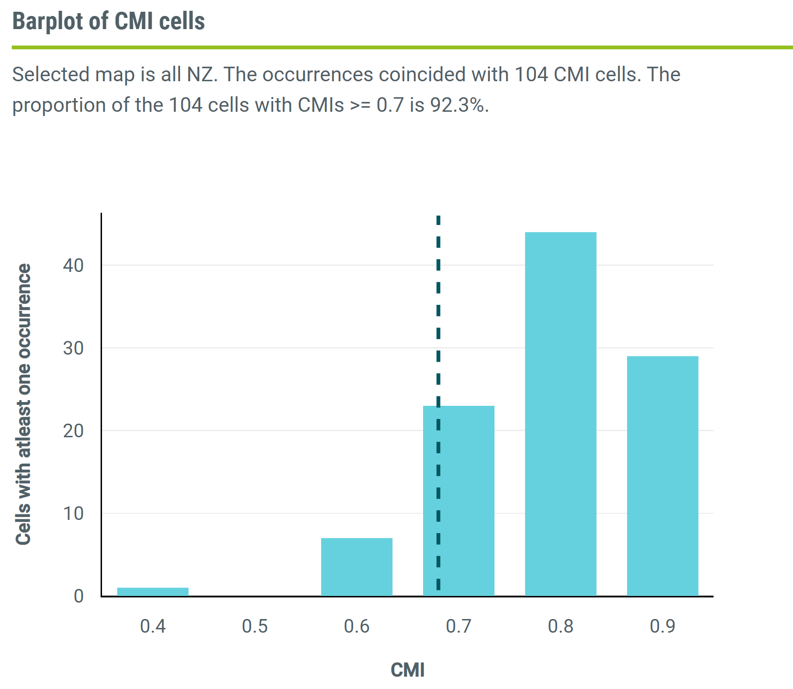

Exercise 16. Species Distribution Modelling Climate matching
MVEN10 Risk Assessment in Environment and Public Health
Exercise overview
Background
The use of species distribution modeling to predict the possible extent of suitable habitat for significant pests has been accepted as an efficient method for determining effective management and countermeasures. CLIMEX and MaxEnt are widely used software for creating species distribution models. CLIMEX predicts climatic suitability of a specific region for target species, whereas MaxEnt uses various environmental variables with presence-only data to assess potential distribution.
Bioclimatic modelling use species occurrence data to model distribution or perform climate matching.
The Global Biodiversity Information Facility https://www.gbif.org/ is an database for species occurrence data.
Purpose
To perform climate matching to assess establisment potential for a potentially invasive species
To extract species occurrence data from a global database
Content
The group that are to do CLIMEX will get a licence for CLIMEX for a personal computer - it costs 10 US dollars https://www.hearne.software/Software/CLIMEX-DYMEX/Editions
Here in the exercise, we will use an online implementation of CLIMEX for New Zealand https://climate.b3nz.org.nz/
Duration
45 minutes
Reporting
Be prepared to report back at the end of the exercise.
References
Steven J. Phillips, Miroslav Dudík, Robert E. Schapire. [Internet] Maxent software for modeling species niches and distributions (Version 3.4.1). Available from url: http://biodiversityinformatics.amnh.org/open_source/maxent/. Accessed on 2023-9-19.
The Climate Matching Tool
NZ - World ximilarities
- Go to the Climate Matching Tool and Access the tool
NZ - World similarities shows the climate similarities between New Zealand and the world
CMI stands for Climate Matching Index and is a value between 0 and 1, where 1 means perfect match and 0 no match.
- A CMI greater than 0.7 corresponds to a high climate match.
- Scroll over the map and derive the match between New Zealand and Lund (southern Sweden).
Upload species occurrences
- Download the example file and view it, e.g. in Excel or as text file
The file has three columns: the first is an identifier from the data base, the second column is latitude and the third column is longitude.
This is species occurrence data for Spotted lanternfly lycorma delicatula which is an invasive species in some parts of the words. The latitude and longitude point out reported places where the species occurs today.
- Upload the occurrences for lycorma delicatula to the online tool
The points on the map show occurrences. The species is found in the US and Eastern Asia. From this you cannot see its native range. On wiki it is states that the Spotted lanternfly is a planthopper indigenous to parts of China and Vietnam. It has spread invasively to Japan, South Korea, and the United States.
- Go to the tab CMI Cells.
The graph represents the distribution of the CMI in cells overlapping with unique occurrences.
If multiple occurrences coincided with a CMI cell, they were counted only once.
This graph can be used when the user wants to eliminate the effects of spatial correlation/sampling bias on occurrences.
The proportion of the occurrences with a CMI greater or equal to 0.7.
The online tool shows that the proportion of the 51 cells with CMIs >= 0.7 is 86.3%. One way to interpret this is that there is a high overlap between the current climate of a species and the climate on New Zealand. If introduced to New Zealand, there is a high risk that the species will be able to establish taking into consideration the climate requirements.
Perform climate matching for another species
- Go to GBIF and prepare to download species occurrence data for the brown bear ursus arctos
You have to create an account to download. If you don’t want to do that, you can get the file here
Citation for the data file: GBIF.org (19 September 2023) GBIF Occurrence Download https://doi.org/10.15468/dl.ccxnby
This file must be cleaned before entering the tool. You can download a cleaned version of the file containing the ID, latitude and longtitude.
- Upload the occurrence data to the online tool and perform climate matching
Solutions
The match between NZ and Lund is 0.84 under the climate from 1985.
The map showing occurrences for the brown bear looks like this

The proportion of the 104 cells with CMIs >= 0.7 is 92.3%. This means that an introduced brown bear would find the climate on New Zealand highly suitable and would be able to establish. Note that this doesn’t take into account biological facts, such as natural enemies, the possibility to reproduce, spread, habitat needs and specific dietary requirements.
